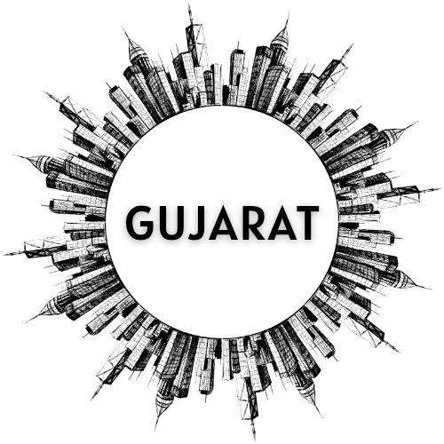

Gujarat
Gujarat, situated on India’s western coast, is a state known for its rich heritage, vibrant culture, and entrepreneurial spirit. It is home to iconic sites like the Somnath Temple, the Sun Temple at Modhera, and the Statue of Unity, the tallest statue in the world. The salt desert of the Rann of Kutch, Gir National Park with its Asiatic lions, and the Sabarmati Ashram linked to Mahatma Gandhi are major attractions. Festivals such as Navratri, celebrated with Garba and Dandiya dances, reflect the state’s lively traditions. Gujarati cuisine, with favorites like dhokla, thepla, and undhiyu, is loved across India and beyond. Modern cities like Ahmedabad and Surat are hubs of industry, textiles, and commerce, making Gujarat a land where tradition and progress beautifully coexist.
Gujarat, on India’s western coast, is a state full of history, culture, and natural beauty. It is famous for the Gir National Park, home to Asiatic lions, and the white salt desert of Kutch that glows under the moonlight. The Somnath Temple, Dwarka’s shrines, and the Sabarmati Ashram linked to Mahatma Gandhi highlight its spiritual and historical importance. Festivals like Navratri, celebrated with Garba and Dandiya, bring people together in colorful traditions. Gujarati food, including dhokla, thepla, and fafda-jalebi, is loved for its unique flavors. Modern cities like Ahmedabad and Surat are centers of trade, textiles, and industry, making Gujarat a place where tradition and progress live side by side.
Gujarat Tourist Attractions
| City | Attraction | Description |
|---|---|---|
| Ahmedabad | Sabarmati Ashram | Historic residence of Mahatma Gandhi, symbol of India’s freedom struggle. |
| Kankaria Lake | Picturesque circular lake of Ahmedabad, a hub of leisure, culture, and vibrant community life. | |
| Adalaj Stepwell | Magnificent 15th‑century stepwell near Ahmedabad, blending Indo‑Islamic architecture and timeless heritage. | |
| Law Garden | Bustling urban garden of Ahmedabad, famous for its vibrant night market and cultural charm. | |
| Junagadh | Uparkot Fort | Ancient hilltop fort of Junagadh, known for its massive walls, historic cannons, and Buddhist caves. |
| BAPS Swaminarayan Temple | Magnificent temple in Junagadh, celebrated for its intricate carvings and spiritual serenity. | |
| Mahabat Maqbara | Stunning Indo‑Islamic mausoleum in Junagadh, famous for its ornate arches and spiraling minarets. | |
| Girnar Hill | Sacred pilgrimage site near Junagadh, dotted with ancient temples and Jain shrines. | |
| Sakkarbaug Zoological Garden | Historic zoo of Junagadh, renowned for its Asiatic lion conservation program. | |
| Somnath | Somnath Temple | A revered temple dedicated to Lord Shiva, known for its history and architecture. |
| Triveni Sangam | Sacred confluence of Ganga, Yamuna, and Saraswati. | |
| Bhalka Tirth | Place where Lord Krishna departed his earthly life. | |
| Kutch | Rann of Kutch | Famous for the white salt desert and the Rann Utsav festival. |
| Rann Utsav | Vibrant desert festival of Kutch, celebrating culture, crafts, and music. | |
| Mandvi Beach | Serene coastal gem of Kutch, known for golden sands and calm waters. | |
| Dwarka | Dwarkadhish Temple | One of the Char Dham pilgrimage sites, dedicated to Lord Krishna. |
| Bet Dwarka | Sacred island near Dwarka, believed to be Lord Krishna’s residence. | |
| Gomti Ghat | Sacred riverside at Dwarka, where pilgrims gather for rituals. | |
| Vadodara | Laxmi Vilas Palace | A grand palace built by the Gaekwad dynasty, four times the size of Buckingham Palace. |
| Sayaji Garden | Expansive green oasis of Vadodara, featuring a zoo and planetarium. | |
| Champaner Pavagadh | UNESCO World Heritage site, blending forts, temples, and Indo-Islamic architecture. |
State Overview Video